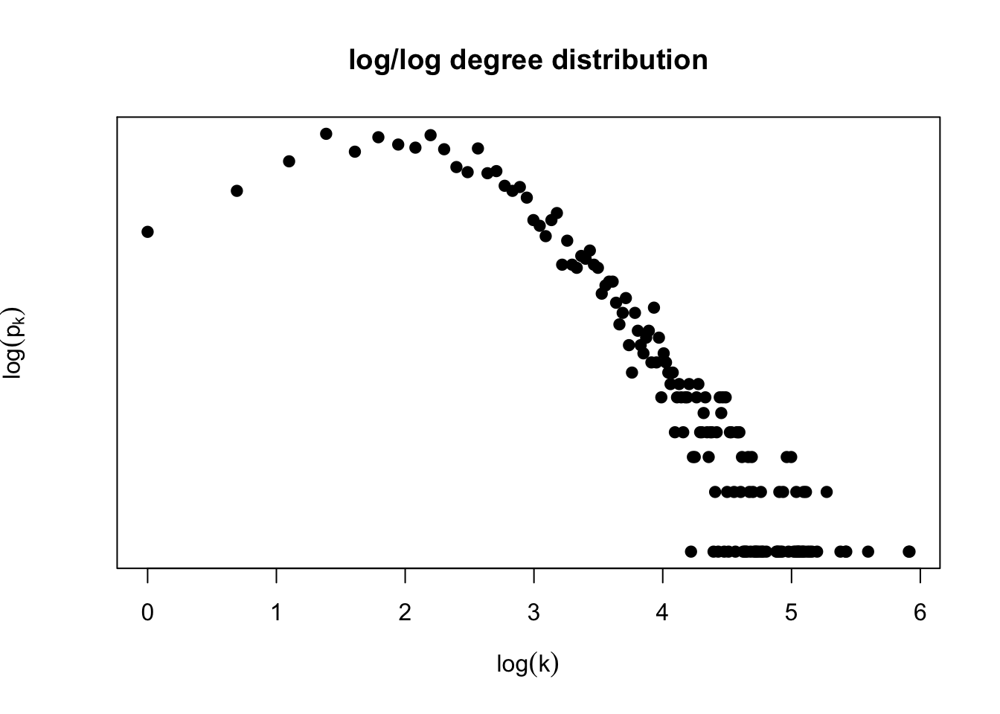

Homework: Network Models
DUE: Monday 9/25/2017, 11:59pm
Posted: 9/19/2017
Last Update: 9/19/2017
In our previous homework you generated the degree distribution of a genetic interaction network:

Question 1: Is this degree distribution consistent with a network generated by the Erdös-Renyi network model? Why?
Fitting the degree distribution
Implement and apply the procedures of Section 4.13 in the Barabasi book to estimate the degree exponent of this network.
Include a plot equivalent to Image 4.24b of the Barabasi book
What is the estimated degree exponent of the genetic interaction network?
Extra challenge: Implement the goodness of fit method using the synthetic D statistic approach. How well does the power law with your estimated degree exponent fit the observed degree distribution of the genetic interaction network model?
Extra-extra challenge: Extend your estimation procedure to include parameters k_{sat} and k_{cut}. What is the estimated degree exponent? Do you observe better goodness of fit?
Network evolution model
Choose what you think is the most appropriate network evolution model for the genetic interaction network from the taxonomy of network evolution models (Image 6.15). Explain why you chose it. If you can formulate an alternative model not in this taxonomy, please explain it and explain why it is a better model.
Plot the predicted degree distribution for your model of choice (you may need to do this by simulating network evolution under your chosen model). How closely can you capture the observed degree distribution of the genetic interaction network? Please answer quantitatively and qualitatively.
What to turn in
Turn in a single pdf containing plots and answers to each exercise. Make sure to comment on how you processed data to get an adjacency matrix.
If you used the method described above state so, if you did something else, please describe what you did. Include all code used to answer this in your pdf.
If using R, I recommend you use Rmarkdown to do this project. If using Python, I recommend you use a Jupyter notebook.
You can work in self-organizing groups of at most 3 of your classmates. On ELMS, please have every member of the group submit the same pdf.